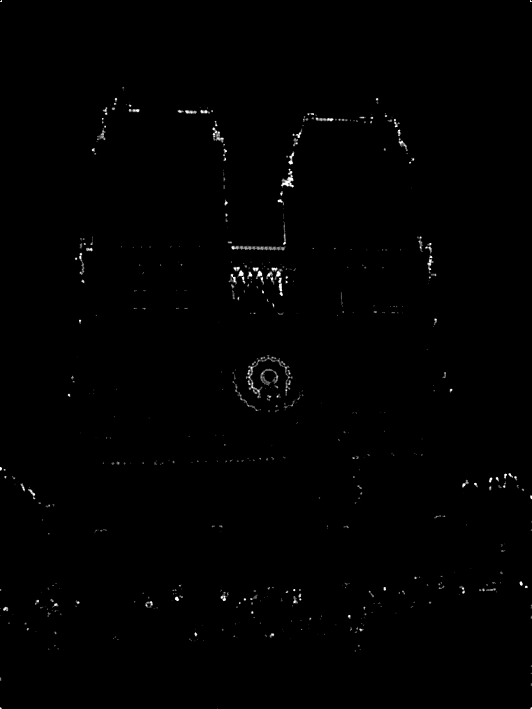
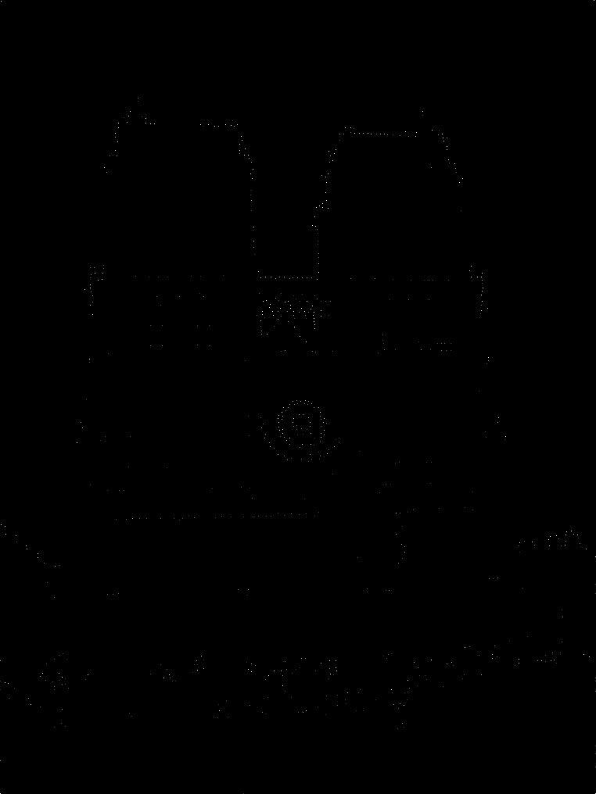
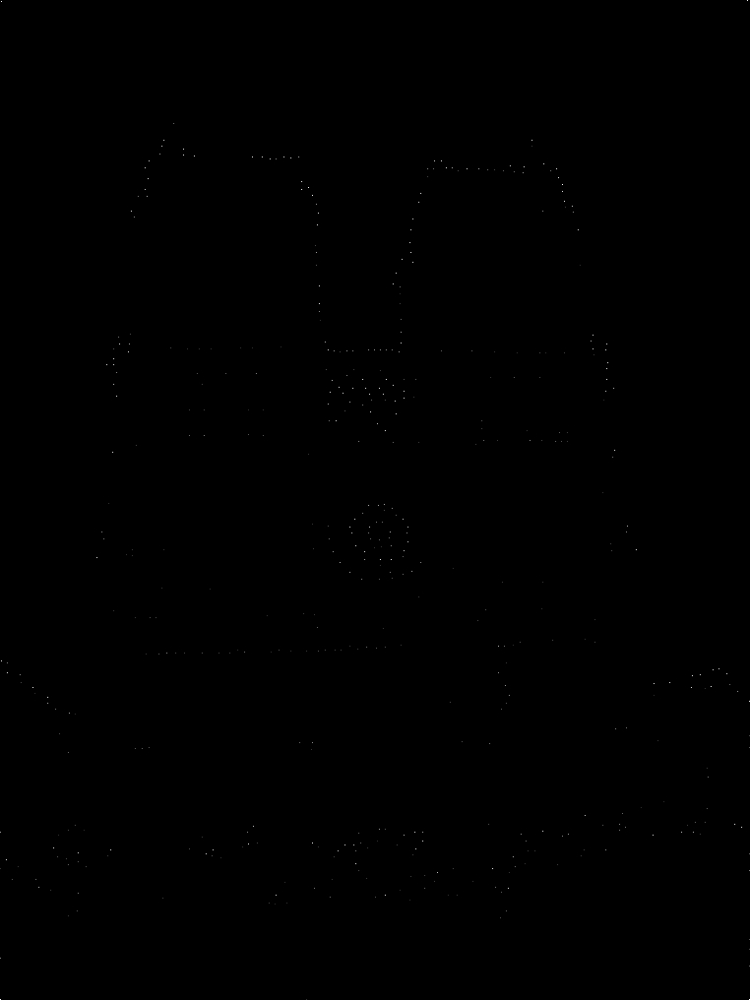
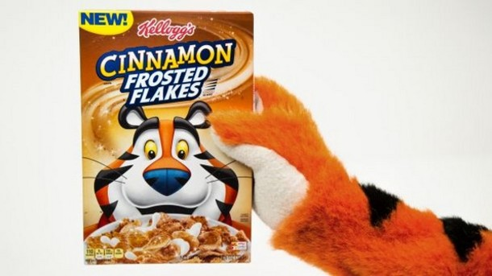
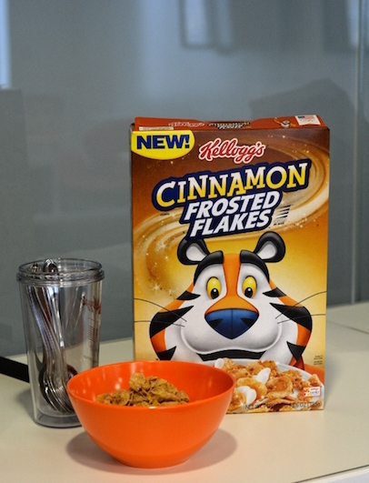
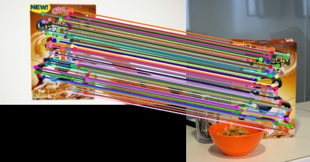
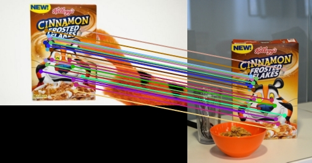

The top 100 most confident local feature matches from my implementation with 99% accuracy on an image of Mount Rushmore.
The overall goal of this assignment was to implement a simplified SIFT pipeline for local feature matching between multiple views of the same physical scene. This was accomplished with three main algorithmic components:
To detect interest points in the images individually, I implemented a baseline Harris corner detector, which computes cornerness scores for all the pixels in an image and selects the highest local maxima as interest points. The idea behind cornerness scores is that one should easily be to recognize a point by looking through a small window, thus we look for pixels around which shifting the window in any direction would give a large change intensity. We can determine this by calculating the gradients of the pixels in the image. If a pixel has a large gradient in both the x- and the y- directions, then we know that shifting a window around this pixel would case a large change in intensity. In other words, if the pixel has a large gradient, then we know that it must be a corner point. In the Harris corner detector, we calculate cornerness scores for all the pixels of the image and select the highest points as interset points. Here is a high level overview of the algorithm:
%calculate gradients of the image
Ix, Iy = sobelfilter(image), sobelinversefilter(image)
Ix2, Iy2, Ixy = (Ix)^2, (Iy)^2, (Ix)*(Iy)
%apply Gaussian blurs with one standard deviation
gaussianfilter(Ix2, Iy2, Ixy)
%calculate cornerness scores
alpha = 0.04
H = (Ix2.*Iy2) - (Ixy.^2) - alpha*((Ix2.*Iy2).^2);
%threshold
threshold = 0.04
H = H .* (H > threshold);
%non-maximum suppression
layers = 3;
for row = 1 : rows
for column = 1 : columns
H(row, column) = 0 unless max val in (row-layers:row_layers, column-layers:column+layers) window
end
end
There are three free parameters in this algorithm: alpha, cornerness threshold, and the number of layers for the non-maximum suppression.
(i) For alpha, the value generally remains between 0.04 and 0.06. For me, changing between the values within this range did not alter my results. For alpha values of both 0.04 and 0.06, I scored 84%. When I bumped alpha up to 0.1, my accuracy dropped to 82%. When I made alpha 0, the accuracy rested at 83%, so this small change in the weight of (Ix2.*Iy2).^2 did not seem to have a significant impact on the result.
(ii) For the cornerness threshold, I found the best threshold value to be 0.04. This filters out all the pixels with scores below that because they do not enough behave like corners. With a threshold of 0.04, I got 99% accuracy on both the Notre Dame and Mount Rushmore image sets. I initially had a threshold of 0.2, and with that I got a score of 84% on the Notre Dame image set. With a threshold of 0.1, I got 90% accuracy on the same set. The benefit of having a higher threshold is that (i) the output will be smaller, and (ii) the pixels for which the cornerness is more questionable are more likely to be omitted. However, (i) the overall speed does not seem to be impacted by more than maybe a few seconds, and (ii) I think that my implementations of the feature detection and matching are very strong, so the fact that I am returning "weaker" corners does not impact me negatively, since my matching algorithm does not match a feature to another feature if the second-closest neighbor is almost as good of a match as the closest neighbor.
(iii)
The number of layers I use for non-maximum suppression also made a pretty big difference. I found the ideal number of layers (for the Notre Dame image set at least) to be 3, so this means that I keep only the maximum value in all 7x7 windows in the image. For the Mount Rushmore image set, here is a mapping of various layer values to their accuracies: 2 --> 98%, 3 --> 99%, 4 --> 99%, 5 --> 98%. For the Notre Dame image set, the mapping was as follows: 2 --> 97%, 3 --> 99%, 4 --> 94%, 5 --> 91%. I think that these discrepancies were higher on the Notre Dame image set because it has a lot of good interest points much closer together and which the feature matching algorithm can match with a pretty high confidence, so if I remove more of those confidently matched points, then the top 100 matches include more points that are matched with lower confidence from other parts of the image.
|    |
Here are the interest points returned for the Notre Dame image set. In order from left to right, the window sizes for the non-maximum suppression are 0x0, 7x7, 11x11. The 7x7 window worked the best. Note that larger windows lead to fewer interest points. (You may need to zoom in for the last two.)
I implemented a SIFT-like local feature descriptor that outputs a vector of length 128 describing each feature. For this algorithm, I iterate through all the interest points returned by the get_interest_point function described above, and consider a square window of length feature_width around the current pixel (I used feature_width=32). As in the standard SIFT algorithm, I then divide this window up into 4x4 patches and then calculate the gradient directions for all the patches. To be more specific, for each 4x4 patch, I create a histogram with 8 bins that divide up all the possible angles on the unit circle. I then look at the x- and y-derivatives for each pixel within the window to compute the angle and place a vote into the bin with that angle. So for each feature, I then have 16 4x4 patches with 8 bins each, for a total of 128 values to describe the feature.
The one free parameter in this algorithm is the feature width. I found that a feature of size 32 pixels x 32 pixels produced the best results for me on both the Notre Dame and Mount Rushmore image sets. For the Notre Dame image set, I got the following results for the following feature widths: 16 pixels --> 91% accuracy, 24 pixels --> 97% accuracy, 28 pixels --> 99% accuracy, 32 pixels --> 99% accuracy, 36 pixels --> 97% accuracy. So for the Notre Dame image set, both 32 and 36 actually produced the same accuracy, but for the Mount Rushmore image set, 32 worked better. Also note that these widths are all multiples of 4, so that the feature grid can evenly be dividied into 4x4 individual cells.
For feature matching, I compare feature descriptors mentioned in the last section between images of the same scene and I implement a nearest neighbor distance ratio test to prioritize the "better" matches. I have desribed my algorithm below:
%define nearest neighbor ratio
threshold = 0.8
for feature1index = 1 : size(features1, 1)
%compute differences for all features in features2
differences = zeros(size(features2, 1), 1);
for feature2index = 1 : size(features2, 1)
differences(feature2index) = sum(abs(features1(feature1index,:) - features2(feature2index,:)));
end
%find closest and second-closest neighbors
[mindiffval, mindiffindex] = min(differences(differences>0));
differences2 = differences .* (differences > mindiffval);
[mindiff2val, mindiff2index] = min(differences2(differences2>0));
%calculate ratio between the closest neighbors
ratio = mindiffval / mindiff2val;
%if match, add to match & confidence vectors and increment matchindex
if ratio < threshold
matches(matchindex, :) = [feature1index; mindiffindex];
confidences(matchindex) = 1 / ratio;
matchindex = matchindex + 1;
end
%truncate match and confidence vector to inlcude only matches
matches = matches(1:matchindex-1,:);
confidences = confidences(1:matchindex-1);
end
%sort matches by highest confidence
The only free parameter in the feature matching algorithm is the threshold for the nearest neighbor ratio. To display the top 100 matches for the Notre Dame and Mount Rushmore image sets, I kept this at 0.8. Before I had fine tuned all my other parameters so that I was getting a 99% correct, I found that lowering this ratio threshold improved the accuracy, since the more confident matches tended to be the correct ones. I chose to define confidence by 1/ratio, since a higher ratio means that the best match is significantly better than the second-best match, so the likelihood of the best match being accurate is higher.
Here are some examples for the Episcopal image set. For a ratio threshold of 0.85, the algorithm scored an accuracy of 50%, but on only two matches. For a threshold of 0.9, the algorithm found 8 matches, but only 38% of them were accurate. For a threshold of 0.95, the algorithm scored only a 16% accuracy on 87 matches. As explained above, this trend makes sense. The reason that all these values are so low for the Episcopal image set is that my SIFT-like algorithm is not scale-invariant. I do not go through a Difference of Gaussians for all the features to determine the best scale; instead, I assume the images are both of a similar scale. If I needed to improve my algorithm, this would be the fist thing that I would add.
For the below results, unless otherwise stated, all the parameters can be assumed to be the values that I described in the previous sections as values that I found to produce the best overall results on the given image sets. The green circles represent accurate matchings, and the red represent false matchings.
The top 100 most confident local feature matches from my implementation with 99% accuracy on an image of Notre Dame.
The top 100 most confident local feature matches from my implementation with 99% accuracy on an image of Mount Rushmore.
For the episcopal image set, I modified the ratio threshold to 0.9 to show more matches and still only got 8 matches with 38% accuracy. This is due to the fact that my algorithm is not scale-invariant, so since the scales of these two images are very different, the algorithm has a difficult time matching them.
I tried out my algorithm on my own images as well. I know that this pipeline is often used for feature detection, so I took an image of a frosted flakes box in the hand of Tony the Tiger, and another picture of a frosted flakes box standing behind a bowl of cereal. Here are the images:
|   |
I was hoping that my algorithm would match a lot of the features on the box but nothing else. And I was really surprised at how well it did. Here is the result from when I first ran it with the same parameters that I had tuned for the other image sets. (I do not have a ground truth for this image set, so there is no accuracy score, but judging by eye it looks like all the points are matched well and I see no obvious outliers.)
|   |
The correspondence on the left was with all the same parameters I described earlier, and for the correspondence on the right, I decreased the nearest neighbor ration threshold to 0.4 to declutter the visualization a bit. Since this is really low, it shows that the matches on the boxes are highly confident.